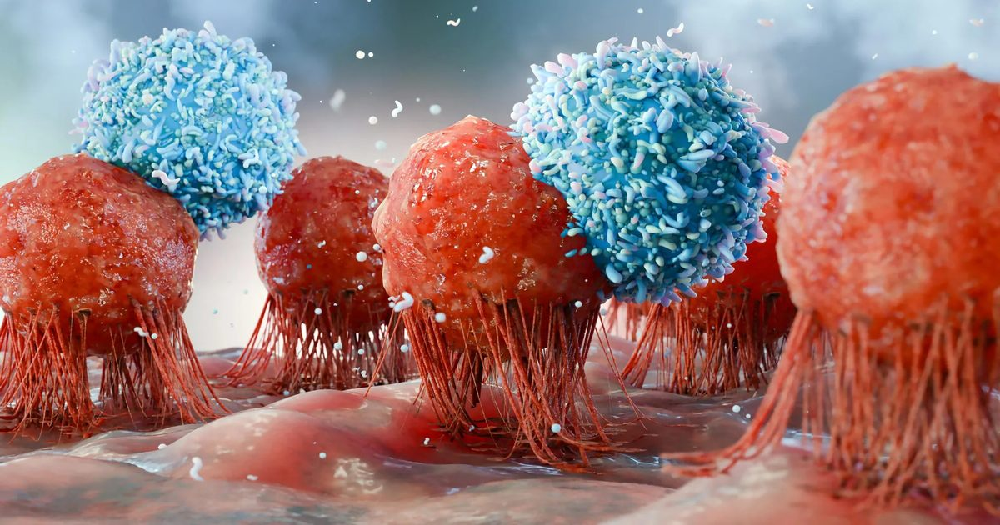

Ученые USC узнают, как создать бесконечный запас клеток, борющихся с раком
Ученые USC обнаружили способ создания потенциально возобновляемого источника генетически модифицированных иммунных клеток, которые могут атаковать рак и укреплять естественную защиту организма.
Выращивая и модифицируя незрелые иммунные клетки, а не зрелые, исследователи разработали систему, которая может непрерывно производить клетки, борющиеся с опухолью, внутри организма.